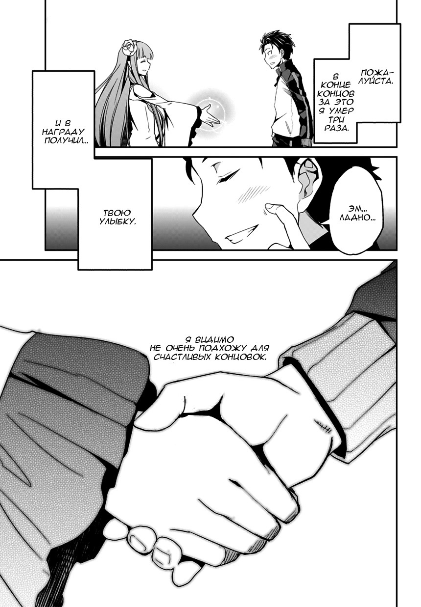
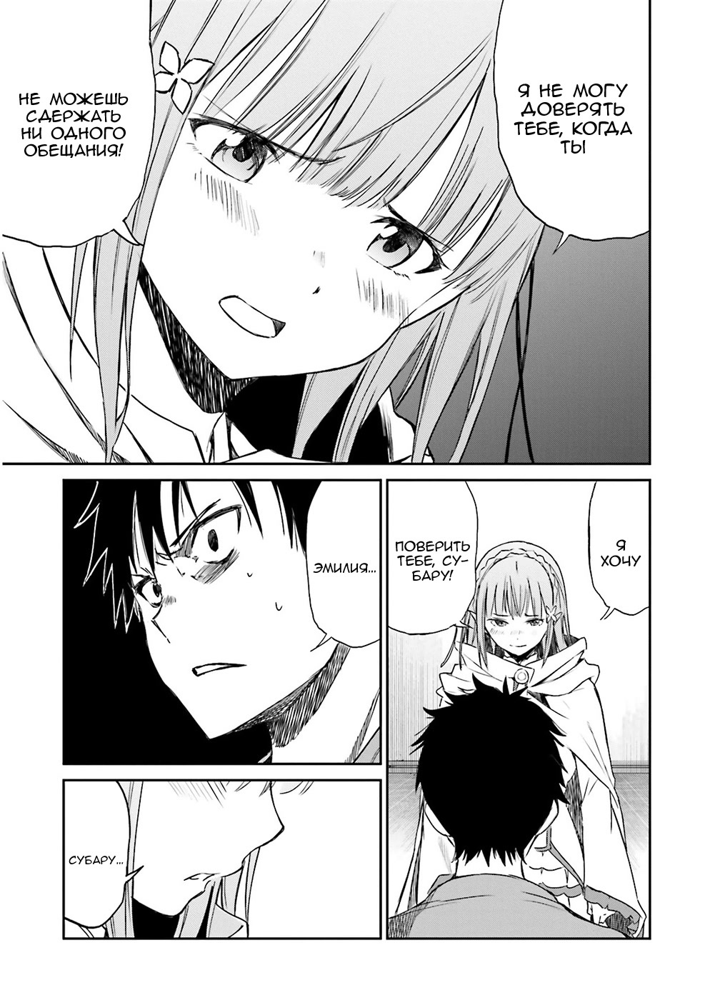
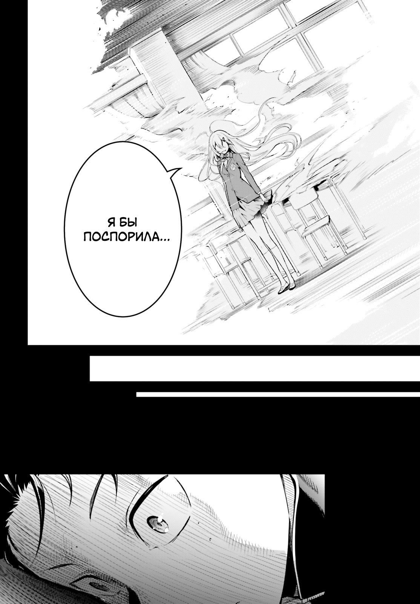

ㅤ
Первой арки нет, она забанена.
Первой арки нет, она забанена.

― 2 арка Особняк
Вторая арка рассказывает о том, как Субару, спасший сереброволосую девушку от смерти, которую на самом деле зовут Эмилия, попадает в особняк графа Розвааля. Граф предлагает ему щедрую награду за спасение Эмилии, но Субару просит лишь сделать его дворецким. Так, он начинает работать в качестве дворецкого вместе с двумя горничными — Рам и Рем. Только привыкнув к своей новой должности, Субару вдруг умирает при загадочных обстоятельствах. Желая найти убийцу, он начинает делать все возможное, чтобы завоевать доверие каждого в особняке.
― 2 арка Особняк
Вторая арка рассказывает о том, как Субару, спасший сереброволосую девушку от смерти, которую на самом деле зовут Эмилия, попадает в особняк графа Розвааля. Граф предлагает ему щедрую награду за спасение Эмилии, но Субару просит лишь сделать его дворецким. Так, он начинает работать в качестве дворецкого вместе с двумя горничными — Рам и Рем. Только привыкнув к своей новой должности, Субару вдруг умирает при загадочных обстоятельствах. Желая найти убийцу, он начинает делать все возможное, чтобы завоевать доверие каждого в особняке.
― 2 арка Дополнительне Главы. ― Читать.

― 3 арка Правда о нуле
Субару, опозорив Эмилию и себя в королевской столице, остаётся лечиться у Феликса под покровительством Круш Карстен. Вскоре после этого Субару и Рем возвращаются в особняк, обнаружив, что весь Лагерь Эмилии мёртв. Стремясь вперёд, Субару находит подсказки и убеждается, что не может сражаться со своими врагами в одиночку, что заставляет его искать помощи у других кандидаток на трон.
― 3 арка Правда о нуле
Субару, опозорив Эмилию и себя в королевской столице, остаётся лечиться у Феликса под покровительством Круш Карстен. Вскоре после этого Субару и Рем возвращаются в особняк, обнаружив, что весь Лагерь Эмилии мёртв. Стремясь вперёд, Субару находит подсказки и убеждается, что не может сражаться со своими врагами в одиночку, что заставляет его искать помощи у других кандидаток на трон.

― 4 арка Святилище и ведьма жадности
Нацуки Субару, будучи сломленным после потери Рем, возвращается вместе со своими товарищами в особняк Розвааля. Приехав в особняк, он встречает лишь одну новую горничную, Фредерику, которая говорит, что её вызвала Рам, чтобы помочь ей за уходом особняка. Поскольку жители деревни, Рам и Розвааль так и не вернулись, Субару и его друзья решают отправиться в Святилище, куда было эвакуировано множество людей. Они встречают Рам и сильно раненого Розвааля. Последний сообщает им, что для того, чтобы все вернулись обратно, необходимо пройти Испытания Святилища. Однако ситуация постепенно начинает усложняться.
― 4 арка Святилище и ведьма жадности
Нацуки Субару, будучи сломленным после потери Рем, возвращается вместе со своими товарищами в особняк Розвааля. Приехав в особняк, он встречает лишь одну новую горничную, Фредерику, которая говорит, что её вызвала Рам, чтобы помочь ей за уходом особняка. Поскольку жители деревни, Рам и Розвааль так и не вернулись, Субару и его друзья решают отправиться в Святилище, куда было эвакуировано множество людей. Они встречают Рам и сильно раненого Розвааля. Последний сообщает им, что для того, чтобы все вернулись обратно, необходимо пройти Испытания Святилища. Однако ситуация постепенно начинает усложняться.